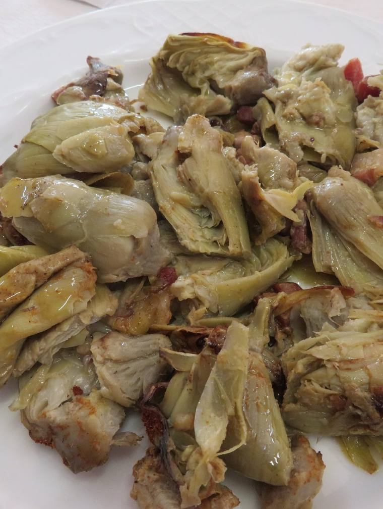

Entrées espagnoles et tapas

Entrées espagnoles et tapas
Alcachofas con jamón
Artichauts au jambon
Préparation : 20 min
Cuisson : 35 min
Ingrédients (pour 4 personnes)
- 1 kg de petits artichauts
- 2 tranches de jambon serrano épais
- 1 petit oignon
- 2 gousses d’ail
- 1 carotte
- 4 cuillères à soupe d’huile d’olive
- 10 cl de vin blanc
- 10 cl d’eau
- 1 citron
- sel
Quantités adaptées. Les temps de cuisson ne sont pas recalculés.
- Parer les artichauts, citronner les cœurs, les cuire 10 minutes à l’eau salée.
- Revenir oignon et carotte râpés et ail haché dans l’huile.
- Ajouter le jambon en dés, puis artichauts, vin et eau.
- Mijoter 15 minutes à feu doux, servir chaud.
D’après Spain.info, office espagnol du tourisme. Traduit et reformulé.